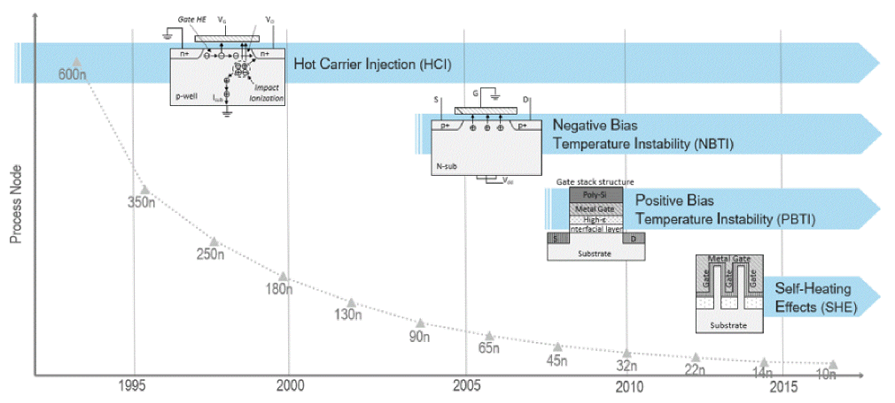
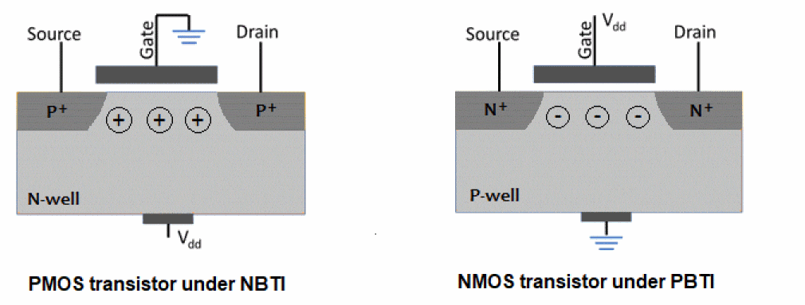
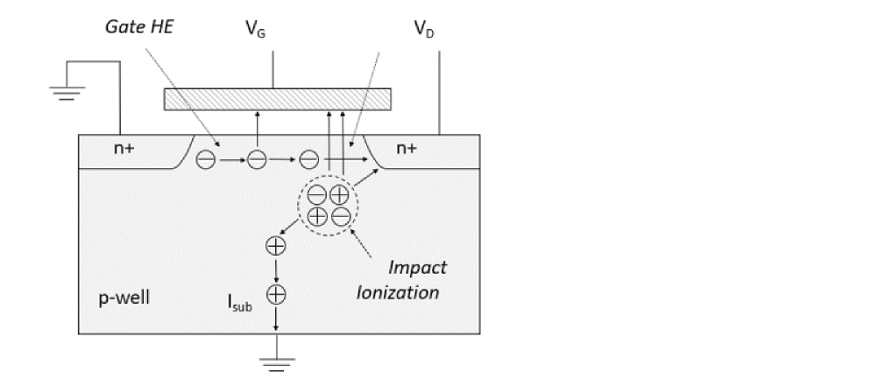

Aging-Aware STA Analysis - Overview
The semiconductor device performance degrades over time due to physical factors, such as Bias Temperature Instability (BTI), Hot Carrier Injection (HCI), and so on. The following diagram shows process nodes and the sources of device failures.
Figure -92 Process nodes and sources of device failures - Illustration

Earlier, the following two methodologies were adopted to account for aging effects into STA:
- Flat timing derates to margin for aging impact
- Perform STA with timing libraries characterized for specific age
However, these methodologies had several limitations. The aging effects on device performance were never modeled comprehensively and accurately in STA. The Tempus advanced aging-aware STA addresses the limitations to improve the accuracy and PPA (power, performance, and area) of a design.
Bias Temperature Instability (BTI) Overview
Within the Si-SiO2 interface region, the silicon bonds are not satisfied and there exist unsatisfied or dangling bonds, that trap charges. The dangling silicon bonds are passivated by forming Si-H bonds (annealing the interface). When a transistor is biased in inversion, the dissociation of Si-H bonds along the silicon-oxide interface causes the generation of interface traps. The devices will be under higher BTI stress, when they are not switching. The rate of generation of these traps is accelerated at higher temperature and supply voltage. These traps cause increase in threshold voltage (V_TH), decrease in drain current (I_d), and decrease in channel mobility (µ).

Hot Carrier Injection (HCI) Overview
When transistor gate length decreases, the electrical field increases. This results in impact ionization. Some hot electrons (HE) generated by impact ionization are attracted to the gate. The hot electrons injected into the gate cause oxide damage and lead to device degradation. These devices are under higher HCI stress when they are switching.

The main factors that influence device degradation are:
Both BTI and HCI semiconductor devices degrade over a period of time. Typically, PMOS devices degrade more than NMOS devices.
Return to top